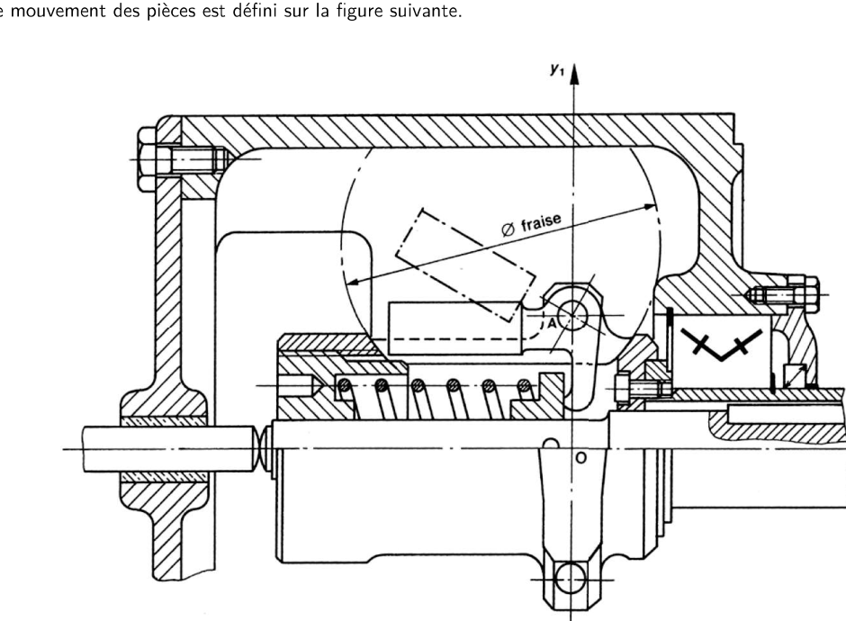
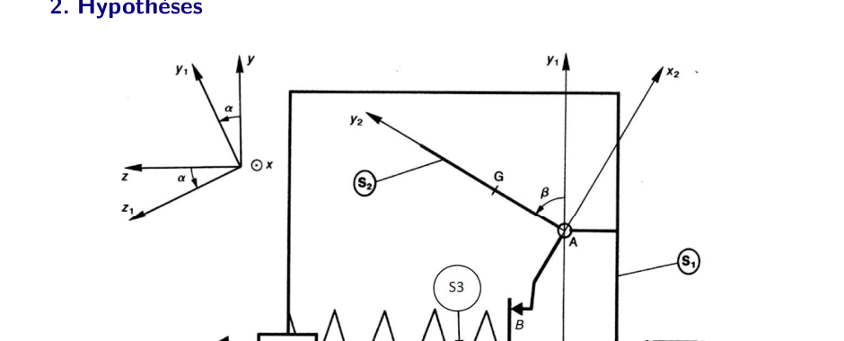

AM2 · SI · Chapitre 3 — Principe fondamental de la dynamique (TD)
Régulateur centrifuge : correction détaillée
Un exercice du TD « Principe fondamental de la dynamique » (CPGE PT, S2I). Un régulateur de vitesse d'une machine thermique :
la masselotte 2 s'écarte sous l'effet de la rotation et comprime un ressort 3 par l'intermédiaire d'un tiroir. Le but est de dimensionner
la raideur du ressort. Pour chaque question : ce qu'elle demande, la démarche, le calcul complet, et les encadrés de méthode.
1. Avant de commencer : l'essentiel en quelques lignes
Le moment dynamique et la liaison pivot
Le PFD appliqué à un solide \(\Sigma\) s'écrit en moment en un point \(P\) : \(\sum\vec M_P(\text{ext})=\vec\delta_{P\in\Sigma/0}\).
Le moment dynamique \(\vec\delta_{A}\) est la dérivée du moment cinétique \(\vec\sigma_A\) (calculé dans le repère de référence).
Liaison pivot d'axe \((A,\vec z_1)\) : elle ne transmet aucun moment selon son propre axe. Projeter l'équation de moment sur \(\vec z_1\)
élimine donc les réactions inconnues en \(A\).
Deux contacts symétriques : un même ressort agit sur deux positions symétriques de la masselotte. Leurs effets
s'additionnent (les termes en poids s'annulent).
Ce que demande le TD au final
Déterminer la composante \(F_R\) de l'effort du ressort, puis la raideur minimale \(k\) du ressort
pour que son allongement reste inférieur à une course maximale \(\Delta l_{max}\).
2. La démarche en 5 étapes
Graphe des liaisons : repérer qui est lié à qui et où agissent les efforts (question 1).
Moment cinétique en \(A\) de la masselotte 2 (question 2), puis sa dérivée (question 3).
Projection sur \(\vec z_1\) du PFD : équation de moment qui ne contient plus le pivot (question 4).
Isoler le ressort 3 pour trouver \(F_R\) à partir de l'effort \(X_{32}\) (question 5).
Dimensionner la raideur (question 6).
3. Le modèle et les données

Schéma de l'énoncé. Le bras 1 tourne autour de l'axe \((O,\vec x)\). La masselotte 2 pivote autour de \((A,\vec z_1)\).
Le tiroir 3 se déplace suivant \(\vec x\) et comprime le ressort.

Paramétrage. Angle \(\alpha\) : rotation du bras 1 autour de \(\vec x\). Angle \(\beta\) : bascule de la masselotte 2 autour de \(\vec z_1\).
Matrice d'inertie de la masselotte en \(A\), dans \(\vec b_2=(\vec x_2,\vec y_2,\vec z_2)\) : \(\bar{\bar I}_{(A,2)}=\begin{pmatrix}A&-F&0\\-F&B&0\\0&0&C\end{pmatrix}\).
Le bras 1 tourne autour de \((O,\vec x)\) à la vitesse \(\dot\alpha\) ; la masselotte 2 tourne par rapport à 1 autour de \((A,\vec z_1)\) à la vitesse \(\dot\beta\).
On admet que \(\beta\) est constant pendant la phase étudiée : \(\dot\beta=\ddot\beta=0\).
Pas de valeurs numériques dans l'énoncé : les résultats restent littéraux.
4. Les questions
Q1Graphe des liaisons
La question en clair
Proposer un graphe des liaisons qui fait apparaître les paramètres et les actions mécaniques.
Graphe des liaisons. Les traits verts sont les liaisons : pivot 0/1, pivot 1/2, ponctuelle 2/3 (contact normal en \(B\)),
glissière 1/3 (direction \(\vec x\)). Le ressort agit entre 1 et 3 avec l'effort \(F_R\).
Q2Moment cinétique en \(A\) de la masselotte 2
La question en clair
Déterminer \(\vec\sigma_{A\in2/0}\) dans le mouvement de 2 par rapport à \(R\).
Démarche
Formule générale : \(\vec\sigma_{A}=\bar{\bar I}_{(A,2)}\cdot\vec\Omega_{2/0}+m\,\overrightarrow{AG}\wedge\vec V_{A\in2/0}\).
Rotation : \(\vec\Omega_{2/0}=\dot\alpha\,\vec x+\dot\beta\,\vec z_1\). Dans \(\vec b_2\), avec \(\vec x=\cos\beta\,\vec x_2-\sin\beta\,\vec y_2\) :
\(\vec\Omega_{2/0}=(\dot\alpha\cos\beta,\ -\dot\alpha\sin\beta,\ \dot\beta)\).
Vitesse de \(A\) : \(A\) est porté par le bras 1 (\(\overrightarrow{OA}=a\vec y_1\)) et \(A\) est le pivot de 2 par rapport à 1, donc \(\vec V_{A\in2/0}=\vec V_{A\in1/0}=\dot\alpha\,\vec x\wedge a\vec y_1=a\dot\alpha\,\vec z_2\).
La question en clair
Déterminer \(\vec\delta_{A\in2/0}\cdot\vec z_1\).
Démarche
Formule : \(\vec\delta_{A\in2/0}=\big[\tfrac{d}{dt}\vec\sigma_A\big]_R+\vec V_{A/0}\wedge m\vec V_{G\in3/0}\) (formule du cours, à appliquer ici avec le bon point).
Le terme \(\vec V_{A/0}\wedge m\vec V_{G}\) ne contribue pas sur \(\vec z_1\) : \(\vec V_{A/0}=a\dot\alpha\,\vec z_1\) est colinéaire à \(\vec z_1\), donc son produit vectoriel avec n'importe quel vecteur est orthogonal à \(\vec z_1\).
Astuce : \(\vec\delta\cdot\vec z_1=\dfrac{d}{dt}(\vec\sigma_A\cdot\vec z_1)-\vec\sigma_A\cdot\Big[\dfrac{d\vec z_1}{dt}\Big]_R\), car \(\vec z_1\) n'est pas fixe dans \(R\).
Dérivée de \(\vec z_1\) dans \(R\) : \(\big[\tfrac{d\vec z_1}{dt}\big]_R=\dot\alpha\,\vec x\wedge\vec z_1=\dot\alpha(-\sin\beta\,\vec x_2-\cos\beta\,\vec y_2)\), soit \((-\dot\alpha\sin\beta,\ -\dot\alpha\cos\beta,\ 0)_{\vec b_2}\).
Premier terme : \(\dfrac{d}{dt}(\sigma_A\cdot z_1)=\dfrac{d}{dt}(C\dot\beta)=C\ddot\beta\).
Second terme : \(\vec\sigma_A\cdot\big[\tfrac{d\vec z_1}{dt}\big]_R=\dot\alpha\big[-\sin\beta\cdot\dot\alpha(A\cos\beta+F\sin\beta+mab)-\cos\beta\cdot(-\dot\alpha)(F\cos\beta+B\sin\beta)\big]\)
\(=\dot\alpha^2\big[(B-A)\sin\beta\cos\beta+F(\cos^2\beta-\sin^2\beta)-mab\sin\beta\big]\).
Réponse
Avec \(\beta\) constant (\(\ddot\beta=0\)) : \(\vec\delta_{A\in2/0}\cdot\vec z_1=\dot\alpha^2\big[mab\sin\beta+(A-B)\cos\beta\sin\beta+F(\sin^2\beta-\cos^2\beta)\big]\).
Q4Équation de moment sur \(\vec z_1\) : effort \(X_{32}\)
La question en clair
Écrire le théorème du moment dynamique selon \((A,\vec z_1)\), et justifier ce choix par rapport à l'objectif.
Démarche
On isole 2 et on fait le bilan : effort \(X_{32}\vec x\) du tiroir 3 en \(B\) (normal au contact), liaison pivot en \(A\) (inconnue), poids de 2 (vertical) en \(G\).
On ramène les actions en \(A\) et on projette sur \(\vec z_1\) : la liaison pivot en \(A\) n'apporte aucun moment selon son axe.
Moment de l'effort du tiroir : \(\overrightarrow{AB}=-c\vec x_2\), \(\overrightarrow{AB}\wedge X_{32}\vec x\cdot\vec z_1=c\,X_{32}\sin\beta\).
Moment du poids : \(\overrightarrow{AG}=b\vec y_2\) ; le poids projeté sur \(\vec z_1\) donne \(bmg\cos\alpha\sin\beta\) (résultat du corrigé).
Justification du choix
L'objectif est l'effort du ressort. Une équation de moment projetée sur \(\vec z_1\) ne contient ni la réaction en \(A\) (pivot), ni les
autres inconnues de la liaison ; elle contient \(X_{32}\), qui est directement relié à \(F_R\) (question 5).
Q5Effort \(F_R\) du ressort
La question en clair
Déterminer la composante \(F_R\) de l'effort du ressort, en précisant le solide isolé et les hypothèses utiles.
Démarche
Isoler le tiroir 3. Bilan : actions du bâti 1 en \(O\), du solide 2 en \(B\) (\(X_{23}\)), en \(B'\) (\(X_{2'3}\)) et \(\{\mathcal T_{res\to3}\}\) du ressort (\(F_R\vec x\)).
PFD en translation suivant \(\vec x\) : \(\sum\vec R\cdot\vec x=m\ddot x\). Comme \(\beta\) est constant, \(x\) est constante : \(\ddot x=0\).
Deux contacts symétriques : la masselotte 2 touche le tiroir en \(B\) et en \(B'\), avec \(\alpha'=\alpha+\pi\), donc \(\cos\alpha'=-\cos\alpha\) et \(\beta'=\beta\).
\(F_R=-X_{23}-X_{2'3}=X_{32}+X_{32'}\).
Pour le premier contact : \(X_{32}=\dfrac{\delta-bmg\cos\alpha\sin\beta}{c\sin\beta}\), avec \(\delta\) la partie en \(\dot\alpha^2\).
Pour le second : \(X_{32'}=\dfrac{\delta-bmg\cos\alpha'\sin\beta}{c\sin\beta}=\dfrac{\delta+bmg\cos\alpha\sin\beta}{c\sin\beta}\).
La somme élimine les termes en poids :
Lecture physique
\(F_R\) croît avec \(\dot\alpha^2\) : plus le régulateur tourne vite, plus la masselotte veut s'écarter, et plus le ressort doit résister.
Le poids n'intervient pas (il s'annule par symétrie des deux contacts).
Q6Dimensionnement de la raideur
La question en clair
Dimensionner le ressort en raideur pour garantir un critère d'allongement maximal.